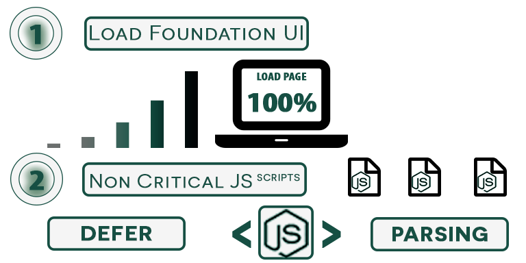

Why Defer Parsing of Javascript?
When Javascript snippets are unnecessary for loading the critical path of a web page, deferring parsing of said Javascript helps improve initial page load time. This means that the necessary content to display the page will receive loading priority over Javascript snippets that don’t need to be executed immediately. Due to the increasing importance of page load speed, loading above-the-fold content should always be prioritized, which is what defer parsing of Javascript helps to achieve.
How To Defer Parsing of Javascript
There are several difference techniques that offer various levels of success to defer Javascript. The following section discusses a few.
- Use a script to call an external JS file once the initial page is done loading. Patrick Sexton, of varvy.com, recommends using this method to help ensure that your webpage’s initial content is done loading before any additional JS gets loaded. This allows your critical path to not be affected by any render blocking Javascript. An external JS file should be created which stores all of the Javascript that isn’t required for the initial display of the web page. The file should then be called by adding the following script just before the
</body> tag of your html document. Don’t forget to replace example.js to point to the actual path of your external Javascript file.
<script type="text/javascript">
function downloadJSAtOnload() {
var element = document.createElement("script");
element.src = "example.js";
document.body.appendChild(element);
}
if (window.addEventListener)
window.addEventListener("load", downloadJSAtOnload, false);
else if (window.attachEvent)
window.attachEvent("onload", downloadJSAtOnload);
else window.onload = downloadJSAtOnload;
</script>
Once the initial webpage has finished loading, the above script will begin downloading and executing example.js.
- Using the async or defer attributes. The async or defer attributes are both somewhat similar in the way they work. Their aim is to minimize the amount of time that html parsing is paused in order to deal with downloading and executing JS. However, both of these methods do not let the page load first and then handle the JS which subsequently can affect loading times. For example, the async attribute allows for the Javascript file to download during HTML parsing, however the JS is executed once it has been completely downloaded thus pausing the HTML parsing.

Alternatively, the defer attribute also allows for JS to be downloaded without pausing HTML parsing, however takes a different approach to execution by executing the file only once the parsing is complete.

Both of these methods aim to minimize render blocking JS, however in both cases the JS does not wait for the HTML to finish parsing before starting to download or execute (in the case of async).
- Move Javascript to the bottom of your page. Lastly, some have suggested to move your
<script> tags to the bottom of your page. This method however is sub-optimal as the browser will continue to show a busy indicator until the last JS has completely finished being parsed. In some cases, users may not interact with a page until the busy indicator shows that the page is completely loaded, therefore resulting in longer load times and a substandard user experience.
Benefits of Deferring Javascript
To defer Javascript from loading until the critical path is complete, is a recommendation given by site speed test tools such a Gtmetrix and Pingdom. Doing this allows for the above-the-fold content to load quicker allowing both your visitors and the Google bot to interact faster with your pages. This not only helps improve the user experience for your visitors, however may also help you rank higher in SERPs as Google uses site speed and prioritizes above-the-fold content.
In most cases, it is recommended to use Varvy’s defer Javascript technique outlined above. However, depending on the amount of time you are willing to spend on rectifying this issue as well as your use-case, the other options may also be worth experimenting with.
</body> tag of your html document. Don’t forget to replace example.js to point to the actual path of your external Javascript file.
<script type="text/javascript">
function downloadJSAtOnload() {
var element = document.createElement("script");
element.src = "example.js";
document.body.appendChild(element);
}
if (window.addEventListener)
window.addEventListener("load", downloadJSAtOnload, false);
else if (window.attachEvent)
window.attachEvent("onload", downloadJSAtOnload);
else window.onload = downloadJSAtOnload;
</script>
Once the initial webpage has finished loading, the above script will begin downloading and executing example.js.

Alternatively, the defer attribute also allows for JS to be downloaded without pausing HTML parsing, however takes a different approach to execution by executing the file only once the parsing is complete.

Both of these methods aim to minimize render blocking JS, however in both cases the JS does not wait for the HTML to finish parsing before starting to download or execute (in the case of async).
<script> tags to the bottom of your page. This method however is sub-optimal as the browser will continue to show a busy indicator until the last JS has completely finished being parsed. In some cases, users may not interact with a page until the busy indicator shows that the page is completely loaded, therefore resulting in longer load times and a substandard user experience.